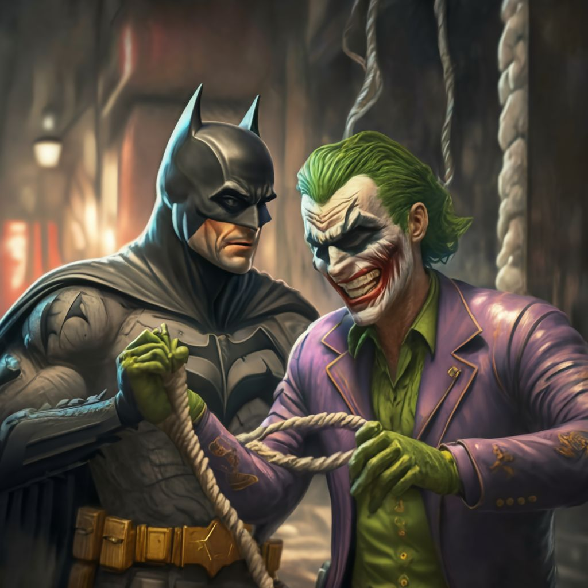

Optando por desactivar el mecanismo del gas del Joker, Batman demuestra una vez más su valentía y su compromiso inquebrantable con la seguridad de los ciudadanos de Gotham. Consciente del peligro que esto representa, sabe que enfrentarse al Joker directamente podría darle al villano la distracción necesaria para activar el dispositivo. La prioridad de Batman es evitar a toda costa una catástrofe mayor.
Con una mezcla de concentración intensa y habilidades técnicas, Batman se acerca al dispositivo. El Joker, divertido por el dilema moral y el desafío que ha presentado a su eterno rival, observa con una sonrisa burlona, esperando el momento oportuno para lanzar alguna de sus trampas.
Mientras Batman trabaja en el mecanismo, utiliza su amplio conocimiento en química y electrónica, recordando los innumerables enfrentamientos pasados con el Joker y las peculiaridades de sus dispositivos. Cada cable, cada secuencia de desactivación, cada trampa potencial es analizada y neutralizada con precisión quirúrgica.
Con el tiempo en contra, Batman siente cómo los segundos se deslizan entre sus dedos como arena. La tensión en el aire es palpable, y los rehenes observan, contenidos por la esperanza y el miedo. Finalmente, con un clic casi inaudible, el dispositivo es desactivado. Un suspiro colectivo de alivio se extiende por el museo, seguido de una ola de aplausos ahogados.
El Joker, frustrado pero aún entretenido, aplaude dramáticamente, felicitando a Batman por su hazaña. "¡Bravo, Batman! ¡Bravo! Siempre sabes cómo arruinar la diversión," exclama, antes de intentar su escape a través de una de sus rutas secretas previamente preparadas.
Opción 1: Aprovechar el momento para capturar al Joker, asegurándose de que sea devuelto al Asilo Arkham.
Opción 2: Asegurarse primero de que los rehenes sean evacuados de manera segura y de que el museo esté libre de otras trampas, corriendo el riesgo de que el Joker escape en el proceso.
¿Cuál debería ser el próximo movimiento de Batman?
|
Opción 1
 |
Opcion 2

|